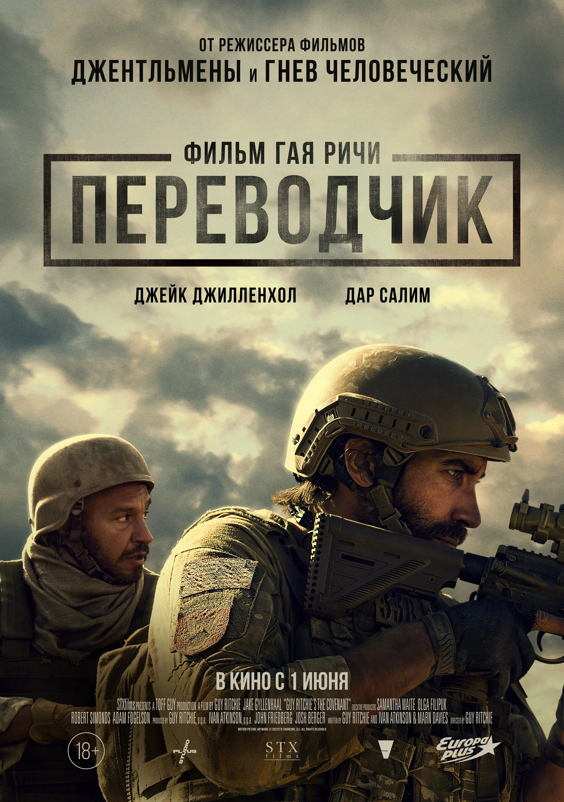
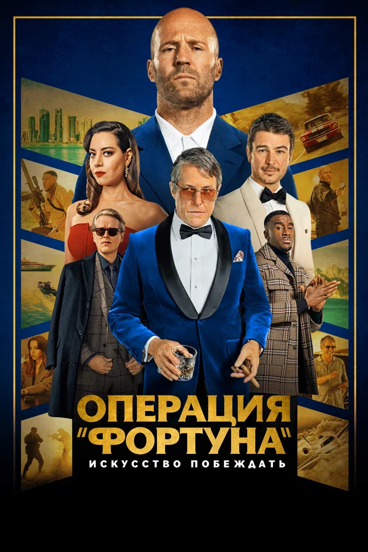
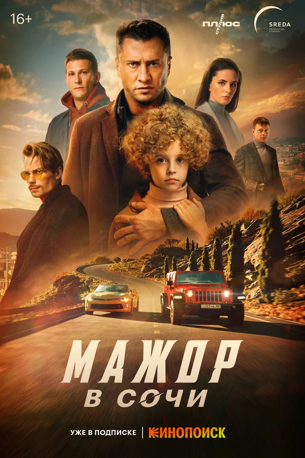
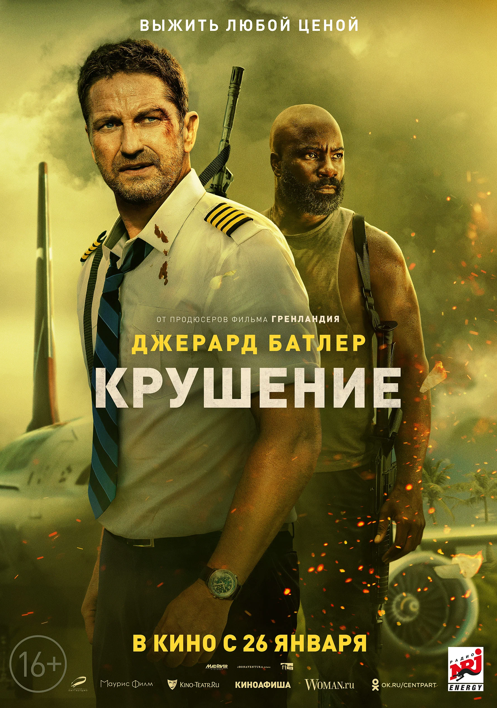
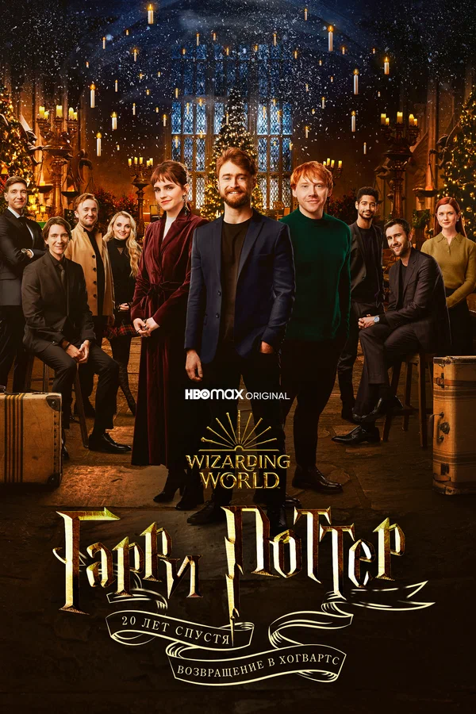
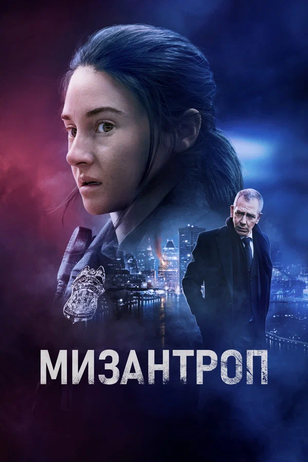
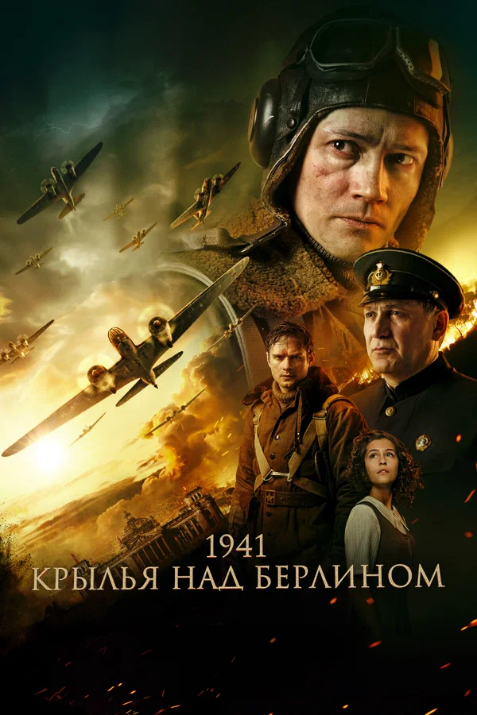
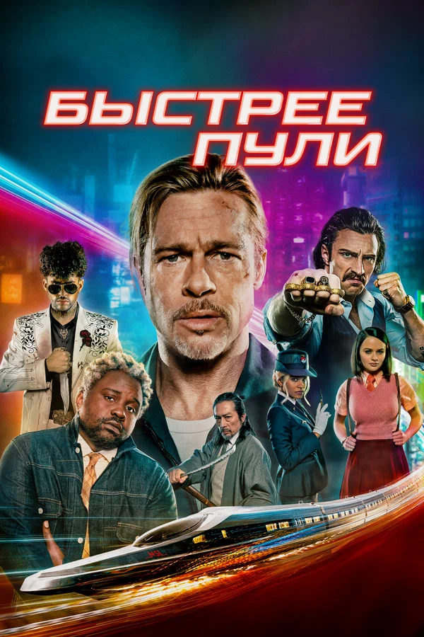
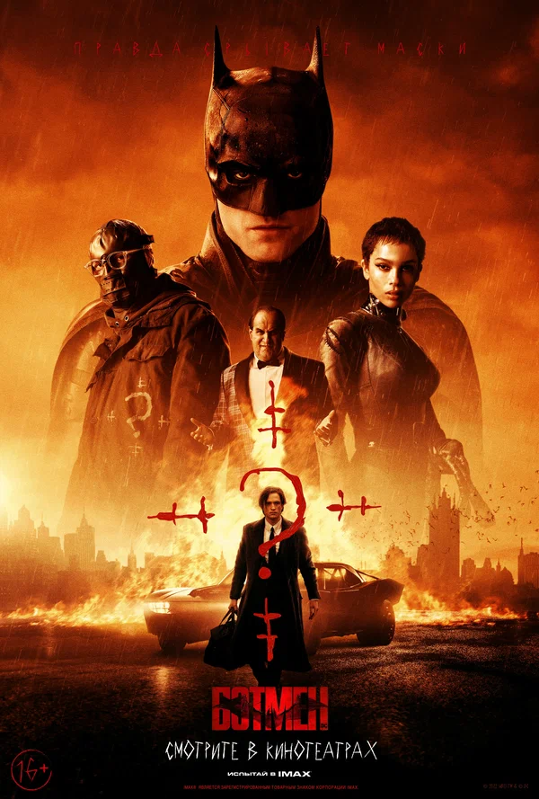

Топ - 10 фильмов 2022-го года
-
1. Переводчик
Оценка по версии кинопоиска: 7.9
Афганистан, март 2018 года. Во время спецоперации по поиску оружия талибов отряд сержанта армии США Джона Кинли попадает в засаду. В живых остаются только сам Джон, получивший ранение, и местный переводчик Ахмед, который сотрудничает с американцами. Очнувшись на родине, Кинли не помнит, как ему удалось выжить, но понимает, что именно Ахмед спас ему жизнь, протащив на себе через опасную территорию. Теперь чувство вины не даёт Джону покоя, и он решает вернуться за Ахмедом и его семьёй, которых в Афганистане усиленно ищут талибы.
Смотреть трейлер -
2. Операция «Фортуна»: Искусство побеждать
Оценка по версии кинопоиска: 7.1
Суперагент британской разведки Орсон Форчун наслаждался заслуженным отпуском, когда родине срочно понадобились его услуги. Из секретной лаборатории похищено предположительно смертельное оружие, поэтому, собрав команду из лучших оперативников, Орсон выходит на посредника в готовящейся сделке продажи — миллиардера и большого поклонника знаменитостей Грэга Симмондса. А чтобы подобраться к нему, в качестве прикрытия решает использовать известного голливудского актёра Дэнни Франческо.
Смотреть трейлер -
3. Мажор в Сочи
Оценка по версии кинопоиска: 7.1
Московские массивные здания и оживлённые дороги Мажор сменит на живописные курортные виды, домик в горах и извилистые серпантины. Туда он перебирается вместе с дочерью Соней, где у них появился свой семейный бизнес — эко-отель. Но ещё до открытия всё идёт наперекосяк. Вначале в гостинице устраивают погром, затем Соколовский наткнётся на местного мажора и перейдёт дорогу сочинскому воротиле, который планирует снести целый жилой квартал, чтобы построить на его месте винодельню.
Смотреть трейлер -
4. Крушение
Оценка по версии кинопоиска: 7.1
Пилоту Броуди Торрансу удаётся успешно посадить повреждённый штормом самолёт на враждебной территории. Вскоре выясняется, что уцелевшим угрожают местные повстанцы, которые хотят захватить пассажиров в заложники. Броуди должен защитить людей, пока не прибудет помощь.
Смотреть трейлер -
5. Гарри Поттер 20 лет спустя: Возвращение в Хогвартс
Оценка по версии кинопоиска: 8.1
Дэниэл Рэдклифф, Руперт Гринт и Эмма Уотсон встретятся со своими коллегами и впервые за долгие годы окажутся в стенах Хогвартса.
Смотреть трейлер -
6. Мизантроп
Оценка по версии кинопоиска: 7.1
Новогодняя ночь в Балтиморе омрачается серией убийств. Стрелок-маньяк, не оставляющий следов, забрал десятки жизней под гром фейерверков прямо в центре города. В любой момент он может снова выйти на охоту, а у главного следователя ФБР Ламмарка нет ни одной зацепки. Заметив потенциал в молодой полицейской Элеанор, благодаря её профессиональным действиям и глубокому пониманию характера убийцы, Ламмарк подключает её к расследованию. Теперь их задача — угнаться за психопатом по спирали разрушения.
Смотреть трейлер -
7. 1941. Крылья над Берлином
Оценка по версии кинопоиска: 7.5
История о подвиге лётчиков 1-го минно-торпедного авиационного полка ВВС Балтийского флота во главе с полковником Преображенским. У них была сложнейшая боевая задача — нанести первые бомбовые удары по Берлину, столице нацистской Германии.
Смотреть трейлер -
8. Быстрее пули
Оценка по версии кинопоиска: 7.9
Наёмник под кодовым именем Божья Коровка отправляется на новую миссию: вместо заболевшего коллеги он должен сесть в скоростной поезд Токио — Киото, выкрасть чемоданчик и сойти на промежуточной станции. Но выполнение простого задания сильно осложняется, когда выясняется, что состав просто кишит всевозможными киллерами.
Смотреть трейлер -
9. Молодой человек
Оценка по версии кинопоиска: 7.3
Ваня Ревзин к своим 30 годам, несмотря на золотую медаль в школе и красный диплом МГУ, оказался на дне: жена ушла к КМС по боксу, с убогой работы в банке уволили, а до закрытия ипотеки за маленькую студию в человейнике — годы боли и страданий. В момент отчаяния Иван узнает, что его ушлый одноклассник-двоечник Коля стал преуспевающим бизнесменом и объявил конкурс для старшеклассников с многомиллионным призовым фондом. Ваня, который выглядит сильно моложе своих лет, и которому даже алкоголь продают только по паспорту, решается на аферу. Он сбривает бороду, подделывает документы и едет на соревнование с уверенностью, что жизненный опыт легко одолеет молодость.
Смотреть трейлер -
10. Бэтмен
Оценка по версии кинопоиска: 7.1
После двух лет поисков правосудия на улицах Готэма Бэтмен становится для горожан олицетворением беспощадного возмездия. Когда в городе происходит серия жестоких нападений на высокопоставленных чиновников, улики приводят Брюса Уэйна в самые тёмные закоулки преступного мира, где он встречает Женщину-Кошку, Пингвина, Кармайна Фальконе и Загадочника. Теперь под прицелом оказывается сам Бэтмен, которому предстоит отличить друга от врага и восстановить справедливость во имя Готэма.
Смотреть трейлер